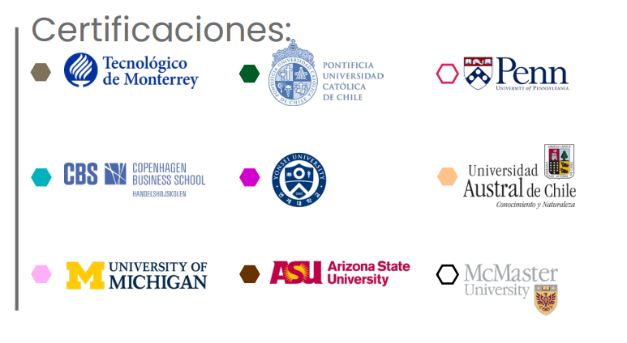

🤖 Ingeniería Ejecutiva en Mecatrónica
Aplica EQ | Categoría: Ingeniería
📖 ¿De qué trata esta Ingeniería?
Forma profesionistas capaces de diseñar, implementar y automatizar procesos industriales mediante programación de robots, sistemas embebidos, sensores, electrónica, redes industriales y tecnologías emergentes como el IIoT (Internet Industrial de las Cosas).
📌 Detalles del Programa
- ⏳ Duración: 4 años (12 cuatrimestres).
- 🛡️ Modalidad: 100% en línea.
- Plataforma: Blackboard con acceso 24/7.
- Clases: 1 a 2 sesiones opcionales semanales (grabadas).
- Soporte: Asistencia Lince durante todo el programa.
- Recursos: Biblioteca virtual, Office, software de simulación y laboratorios digitales.
🌟 Razones para Estudiar en UVM
- Doble Titulación: Opción de obtener título en EE.UU. con National Louis University.
- Certificaciones Coursera: Certificaciones laborales internacionales integradas al plan de estudios.
- Internacionalización: Seminarios globales, viajes académicos, ponencias internacionales y experiencia intercultural.
- Alta empleabilidad: 79% mejora laboral al egresar (Ipsos/UVM 2020).
💼 Oportunidades Laborales
Como ingeniero/a mecatrónico podrás desempeñarte en:
- 📌 Automatización industrial: Diseño y control de procesos en plantas manufactureras o de servicios.
- 📌 Desarrollo de productos: Diseño de dispositivos electrónicos, robóticos o electromecánicos.
- 📌 Mantenimiento inteligente: Diagnóstico y mantenimiento de sistemas automatizados.
- 📌 Integración de tecnologías emergentes: Aplicación de IIoT, visión por computadora y redes industriales.
- 📌 Consultoría y emprendimiento: Creación de soluciones tecnológicas o negocios propios de automatización.
🎓 Certificaciones Internacionales
🎯 Tips para Vender la Ingeniería
- 💡 "Si te gusta la robótica, la electrónica y la automatización, esta carrera combina todo eso en un solo programa."
- 🔍 "Aprenderás a programar robots, diseñar sistemas electrónicos y controlar procesos industriales desde cero."
- 📌 "Podrás trabajar en industrias de alta tecnología o crear tus propias soluciones mecatrónicas para el futuro."
🛑 Objeciones Comunes y Respuestas
- ❓ "¿Debo tener conocimientos previos en robótica?"
✅ "No. El programa inicia desde lo básico y te guía hasta el nivel avanzado con acompañamiento docente." - ❓ "¿Es una carrera difícil?"
✅ "Como toda ingeniería, requiere dedicación, pero tendrás recursos, simuladores y apoyo para avanzar con éxito." - ❓ "¿Tiene campo laboral en México?"
✅ "Sí. El sector manufacturero, automotriz y tecnológico requiere constantemente ingenieros mecatrónicos."